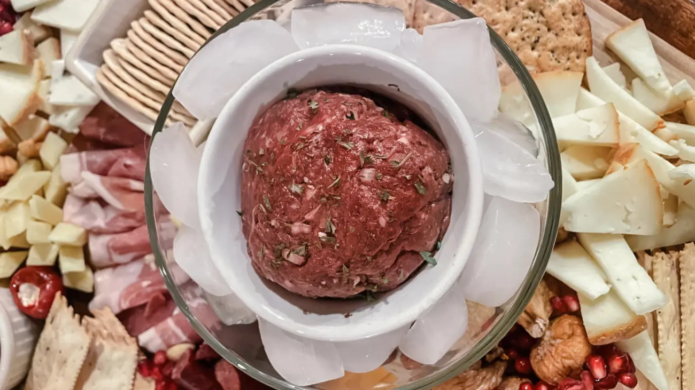

Venison Tiger Meat

Chef's Notes
Here is a quick and easy appetizer recipe
that only takes several minutes to complete. This
recipe is perfect for game nights and what i like to
call "bar food".
I will list the ingredients below followed by a
step by step guide on prepairing the dish.
ingredients
- 1 lb. raw ground meat
- 1 raw egg
- 4 drops of tabasco sauce
- 1/4 cup of finely diced onion
- 1 tbsp. black pepper
- 1 tbsp. salt
- 1 tsp. garlic powder
- 1 tsp. cayenne pepper
- crackers and bread for serving
Preperation
- Combine all ingredients in a bowl and
thoroughly mix with your hands
- Place in an airtight bag and refrigerate
for 8 hours
- Eat with crackers and bread. If serving at
a party, place the tiger meat in a bowl that sits
in an ice bath (see feature image).
- If you do not eat it all within two days,
then cook it with eggs or hashbrowns for
breakfast